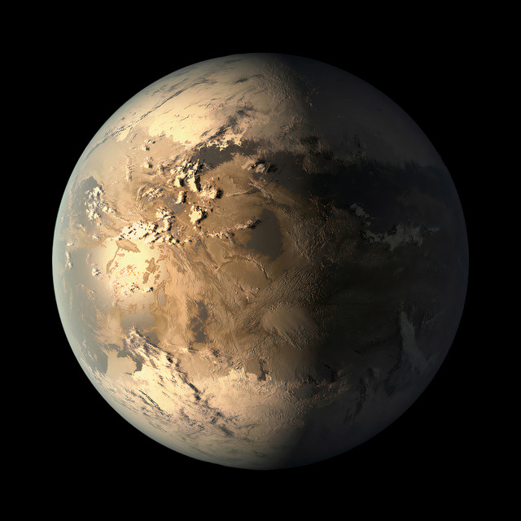

Kepler-186f
Kepler-186f: el primer exoplaneta del tamaño de la Tierra en la zona habitable de una estrella
Kepler-186f es un exoplaneta que orbita la estrella enana roja Kepler-186, a unos 490 años luz de la Tierra. El planeta fue descubierto en 2014 por el telescopio espacial Kepler de la NASA.
Características
1.- Tamaño: El tamaño de Kepler-186f es aproximadamente el mismo que el de la Tierra, con un radio de 1,1 veces el de nuestro planeta.
2.- Masa: La masa de Kepler-186f no se conoce con certeza, pero se estima que es entre 2 y 7 veces la masa de la Tierra.
3.- Órbita: Kepler-186f orbita su estrella en 130 días.
4.- Zona habitable: Kepler-186f se encuentra en la zona habitable de su estrella, lo que significa que podría tener agua líquida en su superficie, un requisito importante para la vida.
Investigación
El descubrimiento de Kepler-186f es un hito importante en la búsqueda de vida extraterrestre.
Es el primer exoplaneta del tamaño de la Tierra en la zona habitable de una estrella, y es un candidato prometedor para la búsqueda de vida.
Los astrónomos están trabajando para aprender más sobre Kepler-186f. Están utilizando telescopios terrestres y espaciales para estudiar su atmósfera y su composición.
Si Kepler-186f tiene una atmósfera, los astrónomos podrían usarla para buscar signos de vida, como la presencia de oxígeno o metano.
Kepler-186f es un planeta fascinante que nos ayuda a comprender mejor el universo. Su estudio nos permite aprender más sobre la formación y evolución de los planetas, así como sobre la posibilidad de vida en otros mundos.